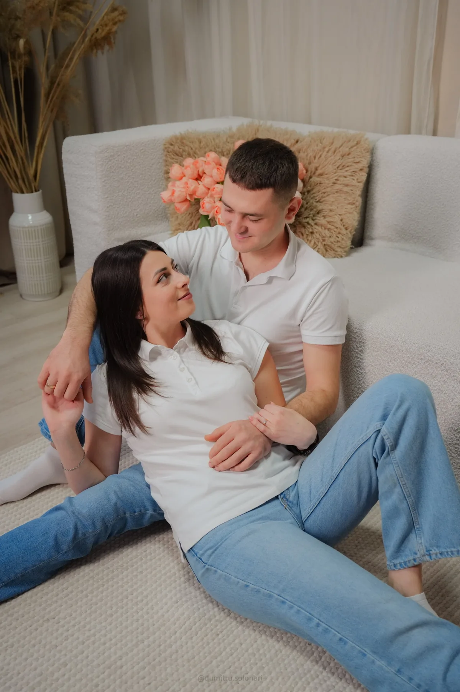

Portofoliu
Povești spuse prin fotografie
O selecție dintre proiectele noastre — ședințe foto documentate cu discreție și atenție la detalii. Pe măsură ce adăugăm nunți și evenimente, le veți găsi tot aici.

Alexandra & Dumitru
O ședință de cuplu cu lumină moale, momente jucăușe și un detaliu special: inelele.
Vezi proiectul →
Alexandrina
Portret editorial în studio — negru elegant, accente de roșu și multă personalitate.
Vezi proiectul →
Ilgutza
Un portret în studio redus la esențial: lumină curată și naturalețe.
Vezi proiectul →Povestea voastră merită păstrată.
Spuneți-ne ce pregătiți, iar noi vă vom ajuta să transformați momentele importante într-o poveste vizuală care va rămâne.
Verifică disponibilitatea